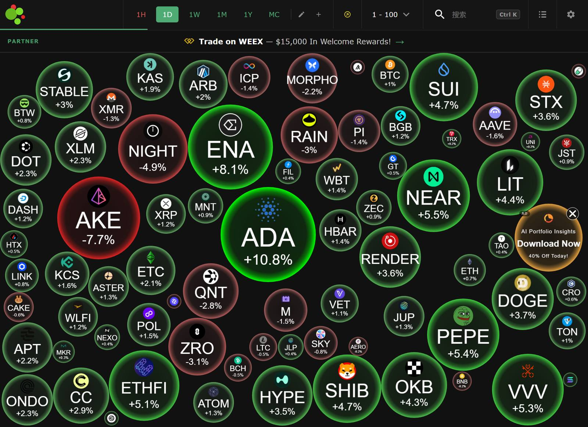

我们的大脑并非为概率和不确定性而设计。我们倾向于低估稀有事件的概率，同时在它们发生后过度反应——这正是黑天鹅的温床。真正的风险管理不是预测下一次危机何时到来，而是构建一个能在危机中存活甚至受益的仓位。历史不会重复，但它会押韵。
| 资产 | 最新 | 当日涨跌 | 备注 |
|---|---|---|---|
| 上证指数 | 3,842.19 | +0.31% | 9/30收盘（节前最后交易日）；10/1-7国庆休市、10/8（周四）复市 |
| 深证成指 | 12,887.62 | -0.11% | 9/30收盘；节前两市量能收缩 |
| 创业板指 | 3,135.28 | -0.23% | 9/30收盘；宁德+1.50%/比亚迪+1.57%红盘 vs 寒武纪-3.54%杀跌 |
| 恒生指数 | 24,104.00 | +0.28% | 10/5收盘；成交997.78亿港元（同比-11.93%）；能源设备全线走强 |
| 恒生科技 | 5,955.00 | -0.31% | 10/5收盘；中芯国际+1.74%、智谱+6% vs 信息技术走低 |
| 日经225 | 68,309.46 | -0.94% | 10/2收盘（-647.26点）；周+2.93%；软银-5.83%、东京电子-3.8% |
| 韩国KOSPI | 7,003.74 | +0.46% | 10/2收盘；SK海力士₩1,841,000 +0.44% |
| 道琼斯 | 51,176.96 | +0.49% | 10/2收盘（+250.40点）；非农夜前风险偏好修复 |
| 标普500 | 7,722.72 | +0.73% | 10/2收盘（+56.27点）；IT服务/光通信/存储领涨 |
| 纳斯达克 | 27,190.86 | +1.19% | 10/2收盘（+319.26点）；盘中新高27,353.68；费半+1.59% |
| 欧洲斯托克600 | — | +0.75% | 10/2收盘；欧债缓和，银行股反弹 |
| 德国DAX | 25,231.20 | +1.17% | 10/2收盘；德债避险买盘消退，风险偏好回升 |
| COMEX黄金 | 4,172.10美元/盎司 | -0.72% | 10/2收盘；非农前获利了结，但欧债避险支撑仍存 |
| COMEX白银 | 61.35美元/盎司 | +1.29% | 10/2收盘；金银比维持高位 |
| WTI原油 | 91.26美元/桶 | -1.73% | 10/2收盘；法国提议释放储备后急挫 |
| 美10Y / 30Y国债 | 5.25% / 5.60% | 10Y -2bp | 10/5早间；非农后回落至5.25%，但仍处2002年来高位区 |
| 美元指数 / 离岸人民币 | 102.04 / 6.706 | DXY +0.4% | 10/5早间；美元走强压制非美货币 |
| BTC（加密风向标） | $86,270 | +1.7% | 10/5实时（24h）；早间一度$86,950后回落；详见板块三 |
| 资产 | 最新 | 4H | 1D | 7D | 备注 |
|---|---|---|---|---|---|
| Bitcoin (BTC) | $86,270 | ↓ -0.5% | ↑ +1.7% | ↑ +3.2% | 24h区间$84,778-86,950；阻力$87,000/$90,000鲸鱼墙；支撑$82,000-84,000；BTC占比≈58-59% |
| Ethereum (ETH) | $2,720 | → 0.0% | ↑ +1.0% | ↑ +2.9% | Gas费0.09-0.12 Gwei极低——价格上涨但链上活动平静；ETF三连流出-$5,540万 |
| Solana (SOL) | $121.00 | → -0.1% | ↑ +0.5% | ↑ +0.8% | 相对弱势；风险偏好外溢受益标的但涨幅收敛 |
| 全市场总市值 | ~$2.95万亿 | CoinGecko 10/5快照 $2.9-3.01T（24h +0.7%） | 24h成交约$900-1,000亿；DeFi $88.76B +0.9%；稳定币$293B | ||
| 恐惧贪婪指数 | 70 | Alternative.me 10/5（Greed；10/4=65、10/3=67、10/2=72） | 贪婪区第11天——价格新高但情绪读数自72小幅降温 | ||

| 事件 | 领先选项 | 当前概率 | 总成交量 | 备注 |
|---|---|---|---|---|
| 💵 宏观 / 政策 | ||||
| 美联储 10月会议（10/27-28）维持利率不变 | Yes | 82.5% | $695.3K流动性（Polymarket 10/5） | Polymarket 10/5 12:11 AM ET；CME并列：不变77.9%/加息22.1%（蓝鲸新闻10/5）——非农+2.9万后10月加息概率归零 |
| 美联储 10月会议加息 25bp | Yes | 16% | 同上 | Polymarket 10/5；处历史低位——Williams"无需 urgency"+ Jefferson"无需仓促"+ 非农爆雷三重确认 |
| 美联储 12月会议累计加息 25bp | Yes | 62.3% | — | CME FedWatch 10/5；累计+50bp 24.3%/全年不变11.4%——主战场已移至12月 |
| 🪙 加密价格 | ||||
| BTC 10月内触及 $87,500 | Yes | 80.5%（24h +9.0点） | $277K | Polymarket 10/5 04:36 AM（Coincu聚合）；已从72%快速上行——距现价$86,270仅$1,230 |
| BTC 10月内触及 $92,500 | Yes | 39.5% | $167K | Polymarket 10/5；上行目标——突破$87,400后下一档阻力 |
| BTC 2026年底前触及 $90,000 | Yes | 78.5%（6h +5.5点） | $80,812（24h） | Polymarket 10/2；空头挤压+花旗$113K目标共振 |
| BTC 10月内跌至 $80,000 | Yes | 49.5% | 事件累计≈$88万 | Polymarket 10/2；下档风险——多空分歧极大 |
| 🏛 政治 / 选举 | ||||
| 2026 众议院控制权 | 民主党 | 93% | ≈$1,300万 | Polymarket 9/28更新沿用；共和党≈8% |
| 2026 参议院控制权 | 民主党 | 63% | ≈$500万 | 共和党≈38%；中期选举11/3距今29天 |
| 民主党横扫参众两院 | Yes | 63% | — | 分裂国会（R参D众）29%/R横扫8% |
| 🌍 其他热点 | ||||
| BTC 10/5收盘价高于 $84,000 | Yes | 96% | $86.0K | Polymarket 10/5（Polyrama）；现价$86,270已远超该门槛 |
| BTC 2026年底前触及 $100,000 | Yes | 38% | $44,200+ | Polymarket 10/2快照；10月内触$100K仅10.5% |
| 资产 | 赛道 | 当前价格 | 4H | 1D | 5D | 20D |
|---|---|---|---|---|---|---|
| 🔴 第一层 · 每天必看（宏观6项见板块二：Nasdaq、S&P500、BTC、Gold、DXY、US10Y） | ||||||
| 英伟达 (NVDA) | AI 芯片 | $233.95 | — | ↑ +1.34% | ↑ +3.50% | ↑ +5.50% |
| 台积电(ADR) (TSM) | 晶圆代工 | $472.78 | — | ↑ +2.99% | ↑ +4.50% | ↑ +12.50% |
| SK hynix (000660.KS) | HBM/存储 | ₩1,841,000 | — | ↑ +0.44% | — | — |
| 超威半导体 (AMD) | AI 芯片 | $633.91 | — | ↑ +2.95% | ↑ +1.50% | ↑ +36.00% |
| 博通 (AVGO) | AI 芯片/网络 | $355.14 | — | ↑ +3.35% | ↑ +1.80% | ↓ -4.00% |
| 特斯拉 (TSLA) | Robotaxi | $370.59 | — | ↑ +4.65% | ↓ -2.50% | ↑ +2.00% |
| 微软 (MSFT) | 云/AI | $517.53 | — | ↑ +0.92% | ↑ +4.00% | ↑ +5.00% |
| 谷歌-A (GOOGL) | 云/AI | $343.50 | — | ↑ +1.56% | ↑ +0.80% | ↑ +1.50% |
| SpaceX (SPCX) | 航天 | ~$148-158 | — | ↑ +7.0% | ↑ +5.91% | — |
| 🟠 第二层 · 主线确认 | ||||||
| 美光科技 (MU) | 存储 | $1,074.89 | — | ↓ -2.05% | ↓ -0.80% | ↑ +13.00% |
| Arista (ANET) | 网络设备 | $204.49 | — | ↑ +0.44% | ↓ -0.20% | ↑ +10.00% |
| 戴尔科技 (DELL) | 服务器 | $541.74 | — | ↑ +0.70% | ↑ +1.80% | ↑ +11.00% |
| 超微电脑 (SMCI) | 服务器 | $41.92 | — | ↑ +2.07% | ↑ +3.00% | ↑ +15.00% |
| GE Vernova (GEV) | 电力设备 | $987.45 | — | ↑ +3.89% | ↑ +7.00% | ↑ +10.00% |
| 瑞致达 (VST) | 独立电力 | $139.75 | — | ↑ +1.01% | ↑ +2.50% | ↓ -1.50% |
| 星座能源 (CEG) | 核电 | $258.92 | — | ↑ +1.93% | ↑ +1.00% | ↓ -9.00% |
| 寒武纪 (688256.SH) | 国产AI芯片 | ¥1,009.01 | ↓ -3.54% | ↓ -3.54% | ↓ -9.99% | ↓ -9.02% |
| 海光信息 (688041.SH) | 国产CPU/DCU | ¥226.80 | ↓ -3.85% | ↓ -3.85% | ↓ -11.41% | ↓ -9.44% |
| 北方华创 (002371.SZ) | 半导体设备 | ¥615.97 | ↓ -2.07% | ↓ -2.07% | ↓ -8.46% | ↓ -7.75% |
| 中微公司 (688012.SH) | 半导体设备 | ¥318.55 | ↓ -1.92% | ↓ -1.92% | ↓ -9.00% | ↓ -9.12% |
| 中芯国际 (0981.HK) | 晶圆代工 | HK$61.30 | ↑ +1.74% | ↑ +1.74% | ↓ -4.00% | ↓ -10.50% |
| 🟡 第三层 · 高弹性交易 | ||||||
| Palantir (PLTR) | AI 软件 | $190.04 | — | ↑ +1.60% | ↓ -0.50% | ↑ +13.00% |
| Meta (META) | 社交/AI | $728.08 | — | ↑ +0.30% | ↓ -6.00% | ↑ +23.00% |
| 汇川技术 (300124.SZ) | 工控/机器人 | ¥51.90 | ↓ -1.12% | ↓ -1.12% | ↓ -3.98% | ↓ -14.85% |
| 三花智控 (002050.SZ) | 机器人/热管理 | ¥35.71 | ↑ +0.51% | ↑ +0.51% | ↓ -1.03% | ↓ -0.36% |
| 拓普集团 (601689.SH) | 机器人/汽零 | ¥46.52 | ↓ -1.75% | ↓ -1.75% | ↑ +1.77% | ↑ +0.09% |
| 绿的谐波 (688017.SH) | 机器人减速器 | ¥273.75 | ↓ -0.67% | ↓ -0.67% | ↓ -5.25% | ↓ -5.61% |
| 宁德时代 (300750.SZ) | 动力电池 | ¥291.11 | ↑ +1.50% | ↑ +1.50% | ↓ -4.44% | ↓ -18.71% |
| 比亚迪 (002594.SZ) | 新能源车 | ¥83.31 | ↑ +1.57% | ↑ +1.57% | ↓ -3.78% | ↓ -6.09% |